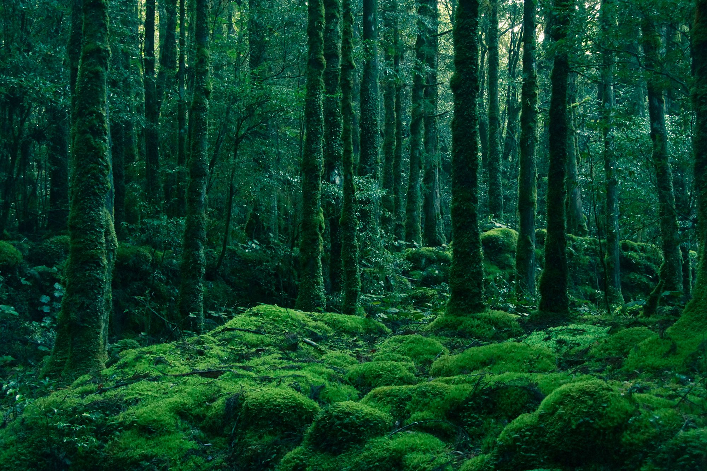

Un racconto di segreti del bosco e di ciò che inghiotte chi trasgredisce

Introduzione
In un giorno di novembre il guardacaccia Creel, mentre girava a cavallo, incontra un uomo reduce da una battuta di caccia in un bosco protetto. Creel gli chiede la licenza e l'uomo mostra un bigliettino da reverendo. Creel rimane sospettoso, attento alle regole dell'area protetta, e decide di approfondire la questione con cura.
L'Incontro e la Voragine
Mentre Creel sta compilando la multa, l'uomo perde l'equilibrio e cade. Inaspettatamente si apre una fossa enorme che lo inghiotte, e dopo pochi istanti la terra si richiude come niente fosse. Il fatto suscita paura e meraviglia: la foresta sembra custodire un segreto inquietante e inspiegabile.
Lo Sfruttamento
Pochi giorni dopo, Creel scopre che la voragine si ripete: tre uomini senza licenza vengono inghiottiti nello stesso punto. La notizia si diffonde tra i guardacaccia, che, invece di parlarne, cominciano a usare il luogo per evitare di scrivere multe. Ciò genera una strana complicità: il bosco diventa teatro di rituali silenziosi.
Epilogo
La stagione successiva la forestale spiana la piazzola e costruisce un grande parcheggio: la bocca dell'inferno sembra scomparsa e il luogo perde la sua aura misteriosa. Creel e un amico brindano per l'anno in cui hanno "tirato la coda al diavolo", ma resta il dubbio su quanto fosse reale quel potere della terra.